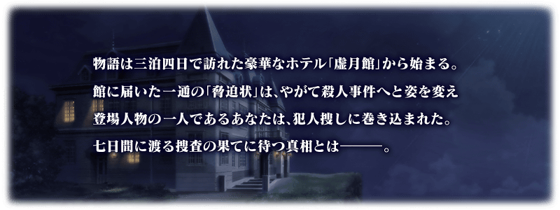
◆活動舉辦期間◆
2018年5月11日(五) 17:00(預定)～5月18日(五) 11:59まで
◆活動概要◆
舉辦期間限定活動「虚月館殺人事件」！
在豪華酒店「虛月館」與夏洛克・福爾摩斯共同體驗七天內展開的殺人事件之謎吧！
※本次活動為追蹤故事的短期間活動。
◆活動參加條件◆
只限通過期間限定「謎特異點Ⅰ 逃離貝克街 舉辦記念關卡」的Master才能參加
※期間限定「謎特異點Ⅰ 逃離貝克街 舉辦記念關卡」為通過「特異點F 炎上汙染都市 冬木」後開放。
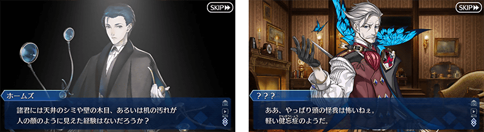


◆「虚月館殺人事件Pick Up召喚(每日交替)」期間◆
期間:2018年5月11日(五) 17:00(預定)～5月25日(五) 11:59
舉辦期間限定「虛月館殺人事件Pick Up召喚(每日交替)」！
從在期間限定活動「虛月館殺人事件」登場Servant之中，「★5(SSR)夏洛克・福爾摩斯」以期間限定登場！
本次包含上述Pick Up10位Servant！
「★4(SR)蘭斯洛特(Saber)」「★4(SR)芬恩・麥克庫爾」「★4(SR)瑪莉・安東尼(Rider)」「★4(SR)新宿的Assassin」「★4(SR)絲西娜」「★3(R)貝德維爾」「★3(R)尤瑞艾莉」「★3(R)豹人」「★3(R)梅菲斯托費勒斯」以每日交替Pick Up、「★5(SSR)夏洛克・福爾摩斯」常駐Pick Up！
※夏洛克・福爾摩斯在Pick Up期間結束後不會追加至故事召喚。
※「虛月館殺人事件Pick Up召喚(每日交替)」中，貝德維爾就算通過第六特異點前也能入手。
※「虛月館殺人事件Pick Up召喚(每日交替)」中，豹人就算通過第七特異點前也能入手。
※期間限定Servant除外的Pick Up對象Servant在Pick Up期間結束後仍會在故事召喚被抽出。
※關於真名尚未判明的Servant，透過主線關卡的進行會讓Servant的名稱變化。
詳情請在聖晶石召喚畫面左下的召喚詳細確認。
Pick Up期間中，期間限定Servant、Pick Up Servant的出現機率提升！
10次召喚中確定1張★4(SR)以上和確定1位★3(R)以上的Servant！
※確定★4(SR)以上包含Servant和概念禮裝。
| 每日交替Pick Up期間 | 每日交替Pick Up內容 |
|---|---|
| 5月11日(五) 17:00(預定)～ 5月13日(日) 22:59 |
夏洛克・福爾摩斯 |
| 5月13日(日) 23:00～5月14日(一) 22:59 | 夏洛克・福爾摩斯 新宿的Assassin 貝德維爾 豹人 |
| 5月14日(一) 23:00～5月15日(二) 22:59 | 夏洛克・福爾摩斯 蘭斯洛特(Saber) 絲西娜 尤瑞艾莉 梅菲斯托費勒斯 |
| 5月15日(二) 23:00～5月16日(三) 22:59 | 夏洛克・福爾摩斯 芬恩・麥克庫爾 瑪莉・安東尼(Rider) |
| 5月16日(三) 23:00～5月17日(四) 22:59 | 夏洛克・福爾摩斯 蘭斯洛特(Saber) 芬恩・麥克庫爾 瑪莉・安東尼(Rider) 新宿的Assassin 絲西娜 貝德維爾 尤瑞艾莉 豹人 梅菲斯托費勒斯 |
| 5月17日(四) 23:00～5月18日(五) 22:59 | 夏洛克・福爾摩斯 新宿的Assassin 貝德維爾 豹人 |
| 5月18日(五) 23:00～5月19日(六) 22:59 | 夏洛克・福爾摩斯 蘭斯洛特(Saber) 絲西娜 尤瑞艾莉 梅菲斯托費勒斯 |
| 5月19日(六) 23:00～5月20日(日) 22:59 | 夏洛克・福爾摩斯 芬恩・麥克庫爾 瑪莉・安東尼(Rider) |
| 5月20日(日) 23:00～ 5月25日(五) 11:59 |
夏洛克・福爾摩斯 蘭斯洛特(Saber) 芬恩・麥克庫爾 瑪莉・安東尼(Rider) 新宿的Assassin 絲西娜 貝德維爾 尤瑞艾莉 豹人 梅菲斯托費勒斯 |
※請注意會以每日交替變更Pick Up的Servant。
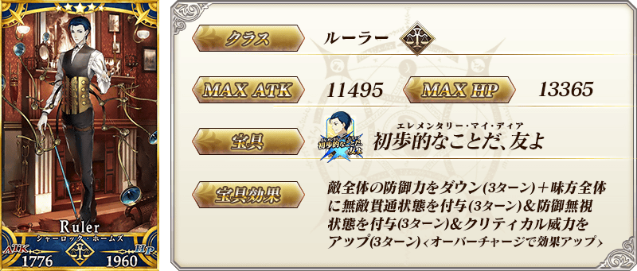

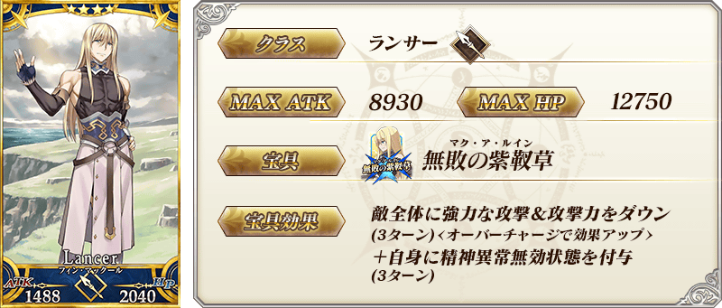
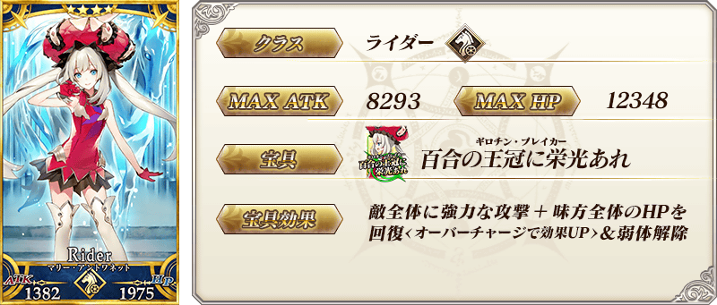
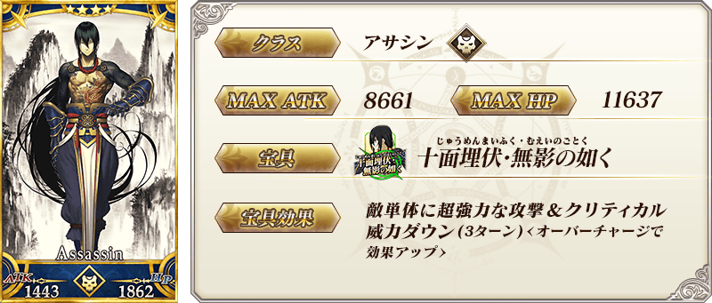
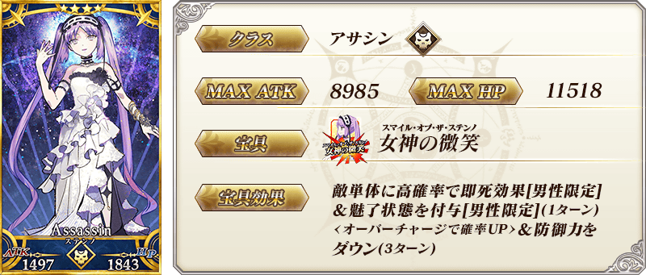

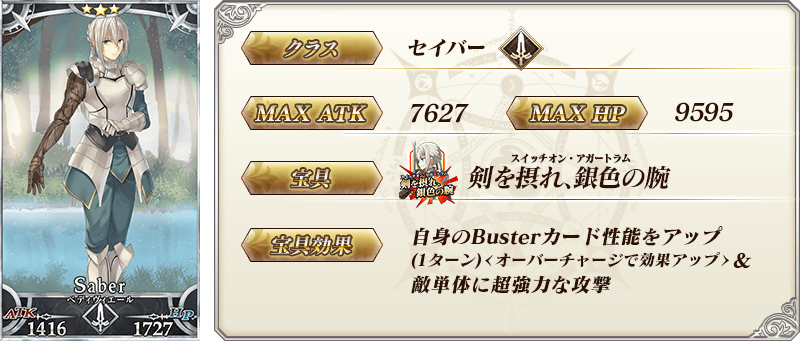
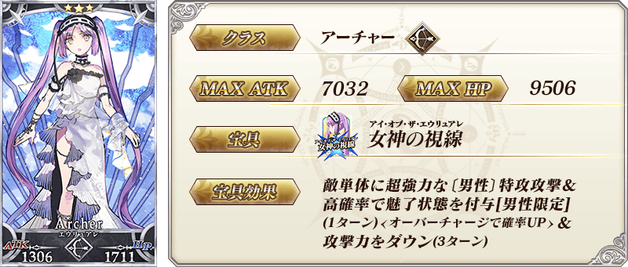
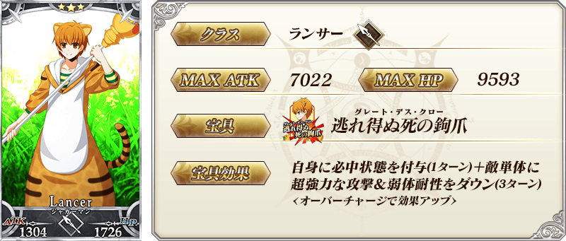

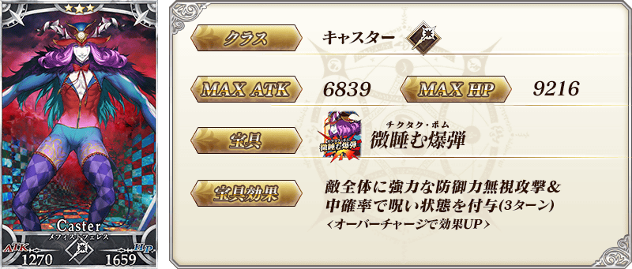
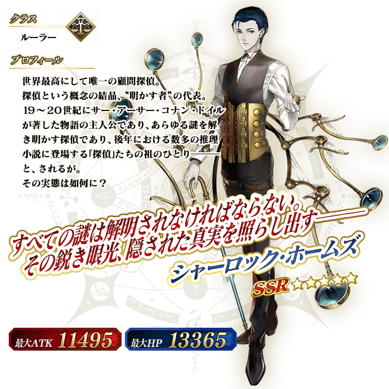
關於「Fate/Grand Order 春之神秘祭2018」和「Fate/Grand Order 春之神秘祭2018宣傳活動」的詳情請至下述橫幅確認。